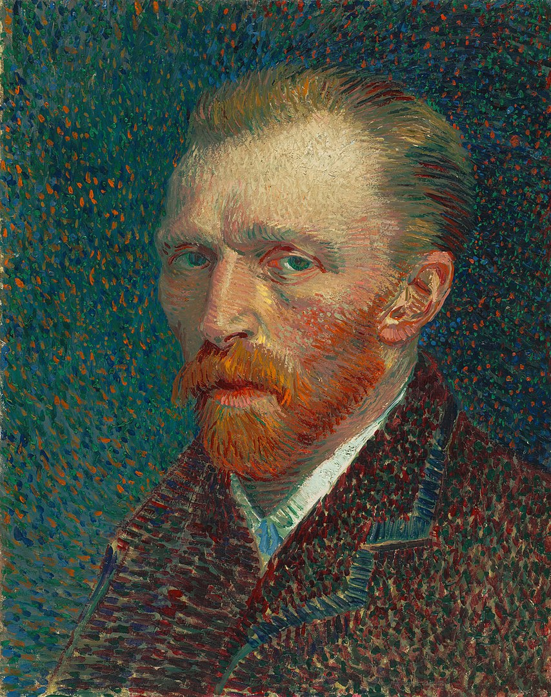
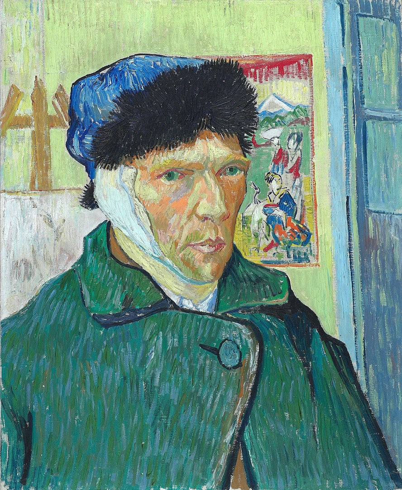

Vincent Willem Van Gogh nasceu em meados do século XIX, mais precisamente em 1853, na Holanda. Começou a trabalhar muito cedo, por volta dos 15 anos de idade como comerciante de peças artísticas na loja de seu tio, na cidade de Haia, no país em que nasceu. Com 20 anos, Van Gogh foi morar em Londres e depois em Paris e logo sentiu que tinha vocação religiosa, de modo que chegou a estudar Teologia em Amsterdã.
Van Gogh não se formou como teólogo, mas atuou como pastor durante alguns meses e, inclusive, chegou a dividir o pouco que tinha com as pessoas mais pobres, porque ficou comovido com a realidade delas. Essa mesma comoção levou Van Gogh a produzir os seus primeiros desenhos a lápis, representando a vida de mineiros belgas que eram extremamente pobres.
Em 1880, o artista que estava prestes a se descobrir resolveu voltar para a cidade de Haia, na Holanda e se dedicar mais à pintura. Suas primeiras telas trabalhavam muito com jogo de luzes e representavam o cotidiano das famílias camponesas que moravam no interior da Holanda. Alguns anos depois, em 1886, ele se mudou para a França onde foi viver com um irmão e teve a oportunidade de conhecer nomes importantes da pintura, como Edgar Degas, Emile Bernard e Paul Gauguin, todos eles representantes da corrente impressionista.
Como não podia ser diferente, Van Gogh recebeu as influências desses artistas que conheceu, de modo que as suas pinturas começaram a ganhar traços do Impressionismo. Ainda na França, ele se mudou para a cidade de Arles, no sul do país, que era muito rica em paisagens. Isso foi muito importante, porque lá ele produziu a única obra de arte que conseguiu vender enquanto era vivo, o quadro que chamou de “A vinha encarnada”.
Trabalhando com pintura, Van Gogh sentiu a miséria bem de perto, passou fome e frio e chegou a viver em barracos. Sendo quase impossível se sustentar com a sua arte, um dos irmãos era quem o ajudava financeiramente, Theo, com quem tinha uma ligação bastante próxima.
Quando foi morar no sul da França, Van Gogh convidou Gauguin para ir com ele e o convite foi aceito. Os dois tiveram uma convivência bastante tranquila até um certo ponto, quando a agressividade começou a se manifestar. Há um relato de que Gauguin teria se envolvido com uma prostituta que era amante de Van Gogh que, ao descobrir, atacou o pintor a golpes de navalha.
Gauguin voltou a viver em Paris depois de uma sequência de conflitos e, logo em seguida, Van Gogh foi diagnosticado com depressão e chegou a cortar a sua própria orelha, um episódio que ficou muito conhecido, afinal, Van Gogh fez um autorretrato mostrando a face depois do ocorrido.
O pintor holandês foi internado em um hospital e, posteriormente, em um asilo, mesmo assim não parou de pintar. No entanto, suas obras mudaram em decorrência do seu estado de saúde e a técnica do pontilhado, que era muito utilizada, foi substituída por pinceladas mais curtas e intensas, que depois deram lugar a curvas em espiral.
Em 1890 ele sai do asilo e vai para uma cidade a noroeste de Paris e passa um período pintando intensamente. Mas acaba tentando suicídio ao atirar contra o próprio peito e morre dois dias depois disso, aos 37 anos de idade.